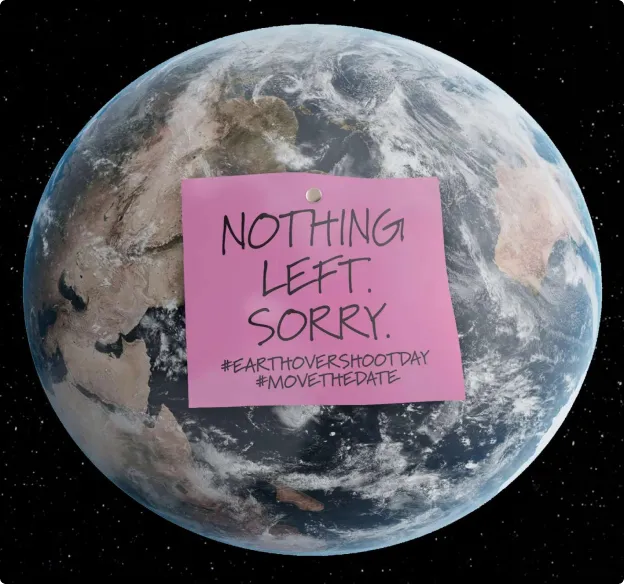

Les ressources terrestres : Pourquoi est-ce une préoccupation ?
Comment j’en ai eu conscience?
Quand j'étais petite, on ne parlait pas autant du réchauffement climatique. Quand j’étais en CP, on a évoqué le trou dans la couche d’ozone. Puis quand j’étais au collège, on me parlait du réchauffement climatique et au lycée, de ses conséquences. Maintenant sur les réseaux sociaux, on en parle constamment.
Il se produit énormément de catastrophes naturelles à cause de l’activité de l’homme. Des vagues de chaleur intenses en été, beaucoup d’incendies, d'inondations, de tempêtes…
Et dans tout ça le jour de dépassement de la Terre qui est plus tôt chaque année !
Qu’est-ce que le jour du dépassement de la Terre?
Le jour de dépassement de la Terre a lieu lorsque l’on a consommé toutes les ressources que la Terre pouvait produire en une année. Il y a quelques années, il n’avait pas lieu avant décembre.
Maintenant en juillet les humains ont consommé tout ce que la planète pouvait produire pendant l’année. C’est une crainte pour l’avenir car le nombre d’individus sur Terre augmente considérablement.
Et les ressources étant consommées plus vite qu’habituellement, il en manquera. Moins d’eau, moins de végétation, moins de cultures, moins de bétail, de futurs problèmes en approvisionnement pour la nourriture.
Nourrir toute la population terrestre aussi bien dans les pays développés que non développés sera un futur défi. Beaucoup de populations n’ont pas accès actuellement à l’eau potable, la nourriture ou l’électricité. S' il manque des ressources, il y aura plus de pays touchés à l’avenir.
Certains laboratoires ont commencé à y réfléchir en essayant de changer notre alimentation, par exemple en produisant de la viande reconstituée.
Quelles types de conséquences?
Mais les conséquences du réchauffement climatique ont aussi un impact sur les cultures. Cette année, une grande sécheresse a touché le Canada, ce qui a provoqué une pénurie mondiale de moutarde. Ce n’est qu’un exemple parmi les suivants qui pourraient avoir lieu.
L’avantage de la médiatisation du réchauffement climatique est que les jeunes sont plus mobilisés pour changer les choses. Et faire en sorte que l’on puisse transmettre une "bonne" planète à nos enfants. Mais ceci est une autre histoire.